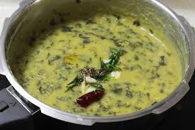
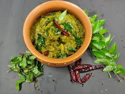

Thunti Koora

Ingredients:
- Thunti leaves (sorrel leaves) - 2 cups (cleaned and chopped)
- Toor dal (pigeon pea lentils) - 1/2 cup
- Green chilies - 2 to 3 (slit lengthwise)
- Onion - 1 medium (finely chopped)
- Tomato - 1 large (chopped)
- Garlic cloves - 2 to 3 (crushed)
- Tamarind pulp - 1 tablespoon
- Turmeric powder - 1/2 teaspoon
- Red chili powder - 1 teaspoon
- Mustard seeds - 1/2 teaspoon
- Cumin seeds - 1/2 teaspoon
- Curry leaves - a few
- Oil - 2 tablespoons
- Salt - to taste
- Water - as required
 Recipe:
- Once the pressure releases, heat oil in a separate pan for tempering.
- Add mustard seeds and let them splutter.
- Then add cumin seeds and curry leaves, sauté for a few seconds.
- Add the cooked dal mixture to the tempering and mix well.
- Simmer for a few minutes until the flavors blend together.
- Adjust the consistency by adding more water if required.
- Thunti Koora is ready to serve. Serve hot with rice or roti.
- Enjoy the tangy and flavorful Thunti Koora as a wholesome meal!